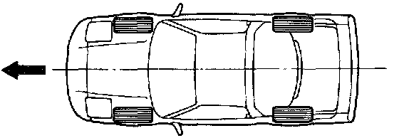
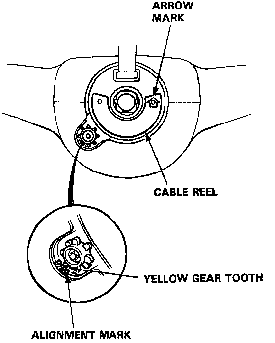
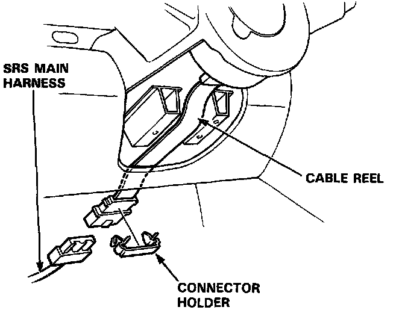

Steering Related Precautions
STEERING-RELATED PRECAUTIONS
- Steering Wheel and Cable Reel Alignment:
NOTE: To avoid misalignment of the steering wheel or airbag on reassembly, make sure the wheels are turned straight ahead before removing the steering wheel.

Rotate the cable reel clockwise unit it stops. Then rotate it counterclockwise (approximately two turns) until:
- The yellow gear tooth lines up with the mark on the cover.
- The arrow on the cable reel label points straight up.

- Steering Column Removal:
CAUTION:
- Before removing the steering column, first disconnect the connector between the cable reel and the SRS main harness.
- If the steering column is going to be removed without dismounting the steering wheel, lock the steering by turning the ignition key to 0-LOCK position or remove the key from the ignition so that the steering wheel will not turn.

- Steering wheel:
- Do not replace the original steering wheel with any other design, since it will make it impossible to properly install the airbag (only use genuine HONDA replacement parts).
- After reassembly confirm that the wheels are still turned straight ahead and that the steering wheel spoke angle is correct. If minor spoke angle adjustment is necessary, do so only by adjustment of the tie-rods, not by removing and repositioning the steering wheel.